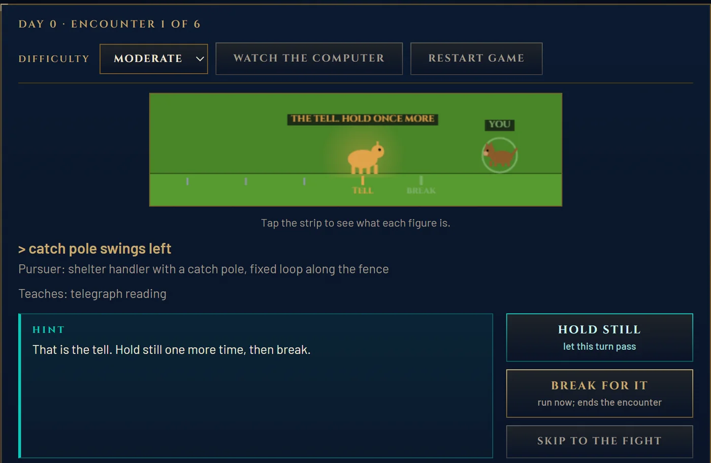

Capstone · Multi-Agent AI for Game Development · ELVTR · 2026
Rex Machina
A game whose content was written by agent pipelines, and whose boss is an agent
you have to outthink. This is what I built, the decisions behind it, and what it taught me about
AI that has to work inside an engine and its editor.
The boss fight. The robot has marked the tile it expects the dog to step on next and
is moving to cut it off, not to chase. It says what it measured. The ledger on the right grades every move
with a search over the robot's own decision model.
42
rows of game content across 5 engine DataTables, every one written by an agent pipeline
$0.25
total model spend for the whole content build, 150 recorded calls on Claude Haiku 4.5
$0
per playthrough, because generated content ships as static data
~3,000
checks per run by an adversarial QA agent, which found 3 real bugs that are now fixed
360/360
fights won by the in-game planner across every difficulty and journey outcome
2
engines: shipped in the browser, and Act 3 rebuilt in Unreal 5.5 Blueprints and packaged for Windows
01 · The game
A dog walks home. A robot learns her.
A shelter dog walks nine days home to the family that gave her away, and finds a robot dog in her place.
Acts 1 and 2 are six chase encounters. Something hunts you, it always telegraphs before it commits,
and you have to read the tell and break on the right turn. How well you run the journey sets your
stamina for Act 3, the fight.
The fight is built around one rule from the course: one agent, one wow. Most enemies chase you.
This one cuts you off. It predicts your next tile from your last few moves, walks to that tile, and says
what it measured: “Two of the last four moves cancelled out.” Repeat a trick and it stops working.
Wait long enough and the robot forgets, and the trick works again. Every line it speaks names something
it actually measured, or it stays silent.

Act 1. The pursuer flares on its tell. The strip marks the tell turn and the break
turn before you press anything. The first version did not, and a playtester lost five runs in a row
to the same misunderstanding.
02 · How the content gets made
I wrote the design doc. Agents wrote everything downstream of it.
Five pipelines, each a small group of agents with one job, each writing rows into an engine-native
DataTable. The game code contains no content at all.
Written by handThe design document
Retrieval over the design doc24 boss lines, 3 arenas, 6 encounters
Generate, evaluate, refine6 retry lines, with a circuit breaker
Style-guide agentJourney narration, scored and rewritten
Synced, sha256 both ends5 DataTables, 42 rows, read by the browser and Unreal builds
A sync script copies each table into the build, hashes both ends and refuses to finish on a
mismatch, so the bytes an agent wrote are the bytes the game loads. The build prints that count
under the play area.
THE RETRY READ provider=replay 6 casesOK retry_yard_clinical attempts 2 fired R2_PRIOR_REF,R3_BUDGET
Yard loss noted. Rightward bias confirmed. Gait degradation measured.ESC retry_fence_gap_confident attempts 3 fired R2,R3,R4_INVENTED_NUMBER
Last run ended at the fence gap. Repeated left.OK retry_train_yard_strained attempts 2 fired R2_PRIOR_REF
Train yard. Right-up bias. Gait deteriorating. Predictable vector. Finish this. ...
6 of 6 first drafts broke a rule. 1 escalated to the breaker.
Real output from the retry-line pipeline, replayed from recorded model turns with no API key.
Every first draft broke at least one of five rules taken from the design doc. One never converged, and
the circuit breaker stopped it instead of shipping it.
Ten assignments, one game
#
What I built
What I kept
1–2
A design doc written as an engineering contract, then rebuilt after a stress test said the AI was decoration
Put the AI where the player feels it
3
An agent crew that writes a narration fallback table
The game ships even if the API is down
4
Retrieval over my own design doc, 33 rows each carrying its provenance
Ground generation in the project's own sources
5
The boss: a goal-oriented agent with perception, prediction, intercept and a veto
Behaviour reads as intelligent when it is legible
6
Generate, evaluate, refine, with a circuit breaker
A rule a program can check beats a model's opinion
7
A style-guide agent that scores out of ten and says why
Refine from the reason, not the score
8
A narrative engine: two agents sharing one JSON ledger and nothing else
A narrow contract between agents
9
An adversarial QA agent that plays the build and tries to break it
Attack the running game, not the document
10
The full pipeline end to end, with a cost audit
Record and replay made cost control and reproducibility one change
03 · Lessons
What this taught me about AI inside an engine
The parts of this project that taught me the most are the parts an in-editor assistant or an
asset generator has to get right.
Ground generation in the project, not the internet
The retrieval index for the content pipeline was my design document, byte for byte, split into
39 chunks. Every generated row records how it got there. Because the source of truth was the
document itself, a story change meant a re-run, not a rewrite.
A generator inside an editor has the same advantage: the project in front of it is the best
knowledge base it will ever get.
Land output as something the engine already reads
The agents wrote DataTables, not prose for a person to transcribe. That made every output
diffable, checksummable and testable, and it let the same 42 rows drive two engines with no
hand edits in between.
Engine-native output is what turns a generator's result into an asset a team can review.
Validate against the running game, not the document
One boss line, “Target favored left nine of twenty recorded moves,” was grounded by retrieval,
passed a rule-based evaluator and passed a style evaluator. It was still wrong. The trigger fired for
any dominant direction, so the robot told a dog that had run right nine times that it favoured left.
Three checks read the line against a document. An agent that played the build found it in seconds.
The fix holds a line back unless it is true of the current game state. Silence beats a
confident lie, and only a check that runs the game can tell the two apart.
Compiling is not working
For the Unreal build I generated Blueprint graphs as text from Python, 18 of them, and pasted
them into the editor. Four of the mistakes I hit along the way compiled clean and produced a
function that returned a constant. A linter I wrote caught ten dropped wires in one graph before
it was ever pasted, and a self-test level that prints each function's values caught the rest.
An agent that writes code or graphs needs an oracle that runs the result. “It compiled”
cannot be that oracle.
An agent cannot drive what it cannot see
Unreal exposes no Python API for building Blueprint graphs, so every graph went in through the
clipboard. On my machine the editor's windows screenshot as black frames, the command-line Python
runner writes its log to a file instead of the console, and a script path with a space in it is
silently cut short. Each of those turned a working step into a failure that looked like success.
A native in-editor agent should not work this way. It needs structured, queryable
editor state and first-class actions, not pixels and paste.
Separate authoring cost from runtime cost
Recording every model turn and replaying it made the whole content build reproducible with no
API key and made test runs free. Total spend for the capstone was $0.25. The number that would
matter at scale is runtime: the boss calling a model once per round is budgeted at about $0.036 a
playthrough, or $360 a month at 10,000 plays.
Generation at authoring time is cheap and reviewable. Generation at runtime has to earn its cost.
04 · Decisions
What I chose, and what it cost
Put the AI in the boss, not beside the game
Instead of
Two modes, play the dog or play the robot.
Because
A stress test of the first design found the player watching the AI rather than playing against it.
Cost
One larger, riskier fight carries the whole idea.
Ship generated content as static data
Instead of
Calling a model while the game runs.
Because
It costs nothing per play, keeps working if the API is down, and every line is tested before a player sees it.
Cost
The boss cannot improvise a line nobody generated.
The browser build is the game. Unreal proves it ports.
Instead of
Unreal only.
Because
A reviewer playing seventy-odd projects will not install one. A link that runs in two minutes gets played.
Cost
Two builds of one fight to keep in step, which both reading the same tables makes manageable.
Key recorded model turns on the whole prompt
Because
A replay is provably the answer to that exact prompt.
Cost
Editing one sentence of the style guide invalidated every recording, and I paid for three full runs to reword prose.
Next time
Key on the structured inputs and keep the full prompt as an audit field.
Prove fairness with search
What
Random boards are rerolled until the game's own search proves a win exists.
Measured
Hard, after a bad journey
Winnable
Raw random board
25 / 40
With the fairness roll
40 / 40
Cost
A few milliseconds of search before each fight.
Search for test lines, never script them
What
A QA check replayed a scripted “optimal line.” After a rule change made that line impossible, the check kept reporting a pass while measuring nothing.
Now
It asks the planner for a line. The question I ask of a passing suite is when each check last had the chance to fail.
Attacking my own work
The QA agent runs fifteen strategies and about 3,000 checks: it re-attempts the exploits the design
doc claims are closed, most of them at every difficulty, fuzzes 300 random fights, and re-searches positions
the game has written off with its own larger search to see whether the game is lying. It found three
real bugs, a read that lied, a stamina counter that went negative, and a refused move that froze the
screen with no feedback. All three are fixed.
05 · The Unreal build
Act 3 in Unreal Engine 5.5
The fight rebuilt in Blueprints and driven by the same five tables. The graphs were generated as
text by a Python generator, linted before pasting, and checked by a self-test level. It is packaged
for Windows from a script. Three key presses advance exactly three rounds, the charge falls as the
robot pursues, and the robot's predicted tile sits in teal ahead of the dog.
The packaged Windows build, three rounds in. Audio is imported and verified, seven
cue families matched to the sound beds the content pipeline wrote. Wiring them into the graphs is next.
06 · Next
If I kept going
One CI workflow: replay every pipeline, sync, run the tests and the adversary, publish if green. Each step is already a single command that fails loudly.
Move the boss's reads to runtime generation behind a cost budget, with the shipped tables as the fallback.
Key recordings on structured inputs, so editing a prompt does not force a paid re-run.
Wire the audio and the journey into the Unreal build.